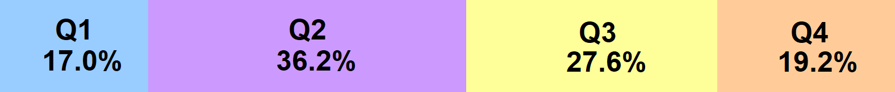

Наукові публікації
(до січня 2026 р.):
|
Щорічна статистика публікацій
|

Публікації в рейтингових журналах
|
Розподілення публікацій по квартилям
|

|
Сумарний журнальний імпакт-фактор за 2 роки (2025-2026) |
Сумарний журнальний імпакт-фактор з 1998 дотепер |
Власний імпакт-фактор за 2 роки (2023-2024) |
||
|
22.63 |
176.68 |
2.44 |
Бібліометрика:
|
Web of Science |
Scopus |
Google Academy |
|
|
| Поля пошуку |
Roshal A
or Roshal AD or Rochal A or Rochal AD |
Roshal AD | Roshal AD |
| Кількість знайдених публікацій: |
142 |
125 | 206 |
| Загальна кількість цитувань: | 1252 | 1294 | 1926 |
|
Середня кількість цитувань у перерахунку: ● на одну публікацію: ● за один рік: ● за 2024 рік: ● за 2025 рік: |
8.8 43.2 66 98 |
10.4 44.6 89 101 |
9.3 66.4 112 150 |
| Індекс Хірша (h-індекс): | 18 | 18 | 21 |
|
Кількість посилань на найбільш цитовану статтю: J.Phys.Chem. A. 102 (1998) 5907-5914 |
151 | 152 | 195 |

|
|